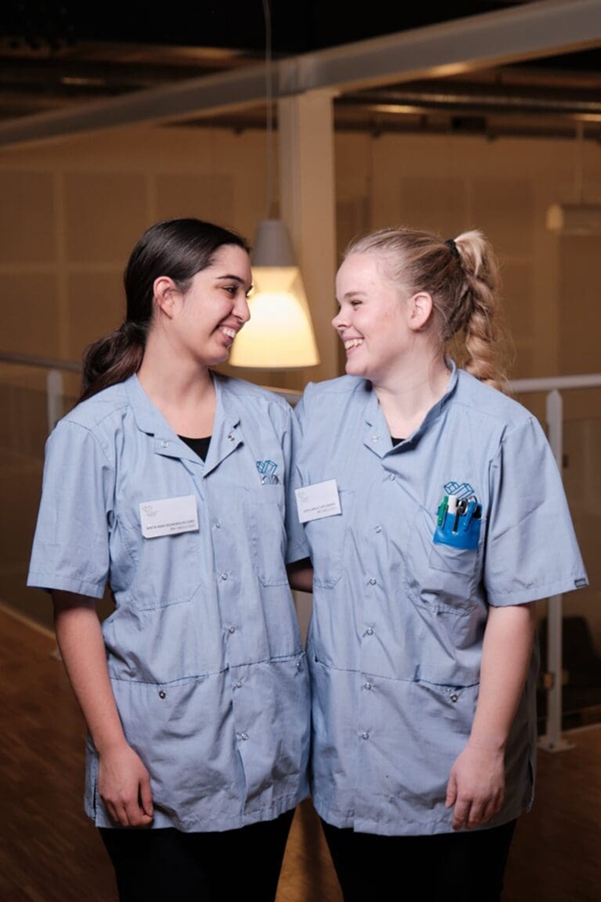

Elever og Vejleder
- På Hjortekær plejehjem tilbyder vi et godt og trygt læringsmiljø for elever i praktik. Her er fokus på faglig udvikling, samarbejde og refleksion.
- Elever har adgang til vejledning, introduktion til dokumentation og mulighed for at arbejde med konkrete arbejdsopgaver sammen med erfarne kollegaer.
- Vi bruger forskellige læringsredskaber som refleksionsskemaer, logbog og cases fra hverdagen.
- Derudover har vi fokus på løbende feedback og læringssamtaler med praktikvejlederen.
- praktikvejleder har en vigtig rolle i forhold til elevernes læring og udvikling. Det er vejlederens opgave at støtte og vejlede eleverne både fagligt og personligt gennem hele praktikperioden.
- Vejlederen skal være med til at planlægge praktikforløbet, følge op med refleksion og feedback og sikre, at eleven når de mål, der er sat.
- Derudover har praktikvejlederen også ansvar for at samarbejde med skolen og resten af teamet på plejehjemmet- så eleven oplever et sammenhængende og trygt læringsmiljø.
